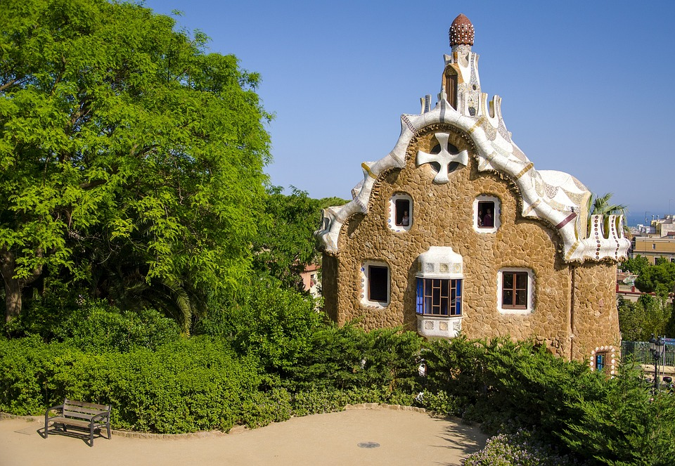

Barcelona journey

바르셀로나의 어느 발코니
가우디의 아름다운 건축미가 느껴지는 발코니 곳곳에 보이는 현란한 색깔의 모자이크는 깨어진 도자기 조각을 맞추어 모자이크를 만드는 트렌카디스(Trencadis) 기법을 사용했다.

구엘공원
가우디의 후원자였던 에우세비 구엘이 설계를 의뢰해 지어진 공원. 1984년 유네스코 세계 문화유산에도 지정되었으며, 높은지대에 있어 기대 이상의 탁트인 경관을 만날 수 있다.

까사바트요
가우디의 걸작으로 꼽히는 건축물
직물업자였던 바뜨요를 위해 지은 저택이다. 바다를 컨셉으로 형상화한 건물이다.